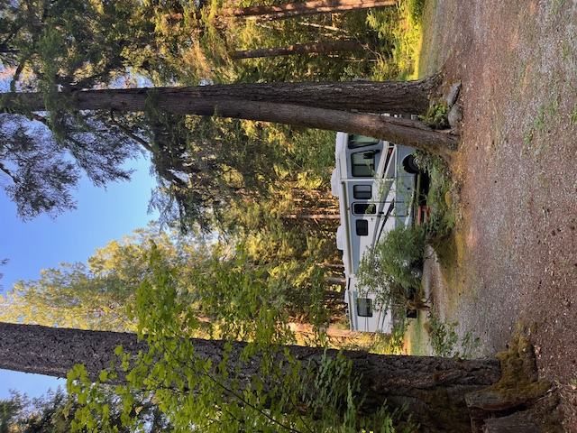
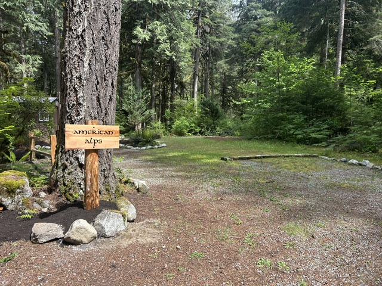
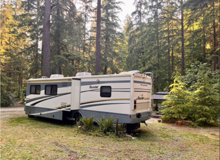

American Alps
Tent or RV Site
This spacious site accommodates an RV and oversized tents. Nestled among the hemlocks and cedars, it provides a peaceful getaway for families or small groups that enjoy extra space.


